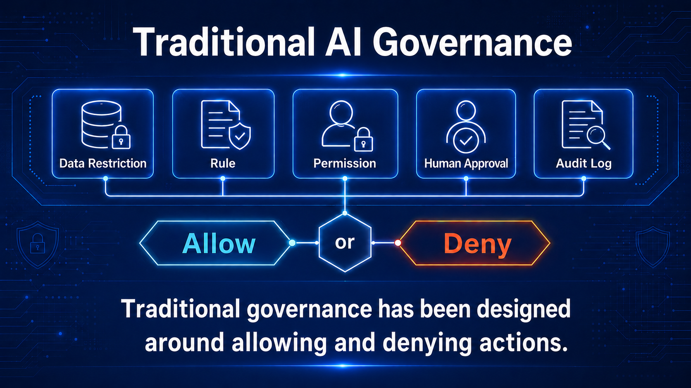
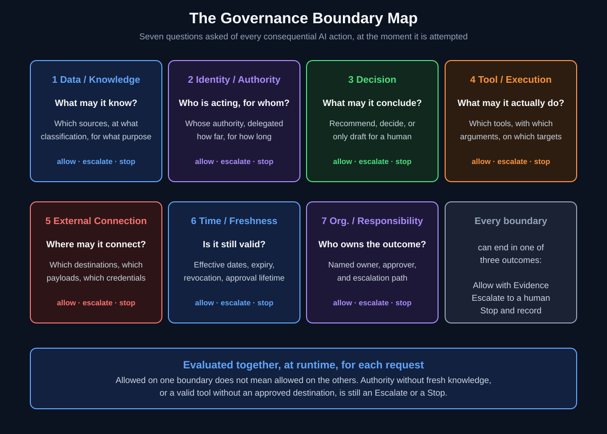
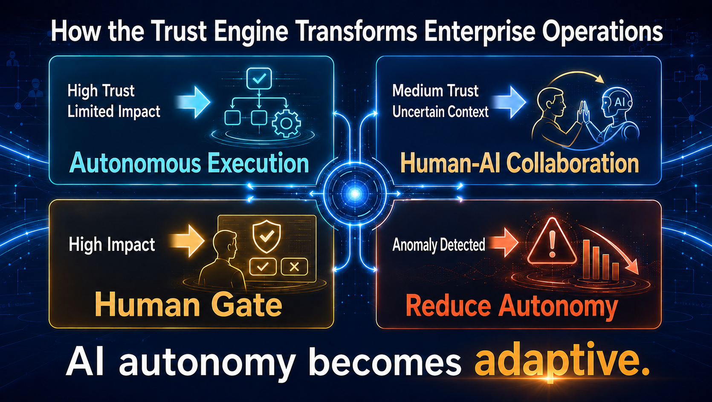
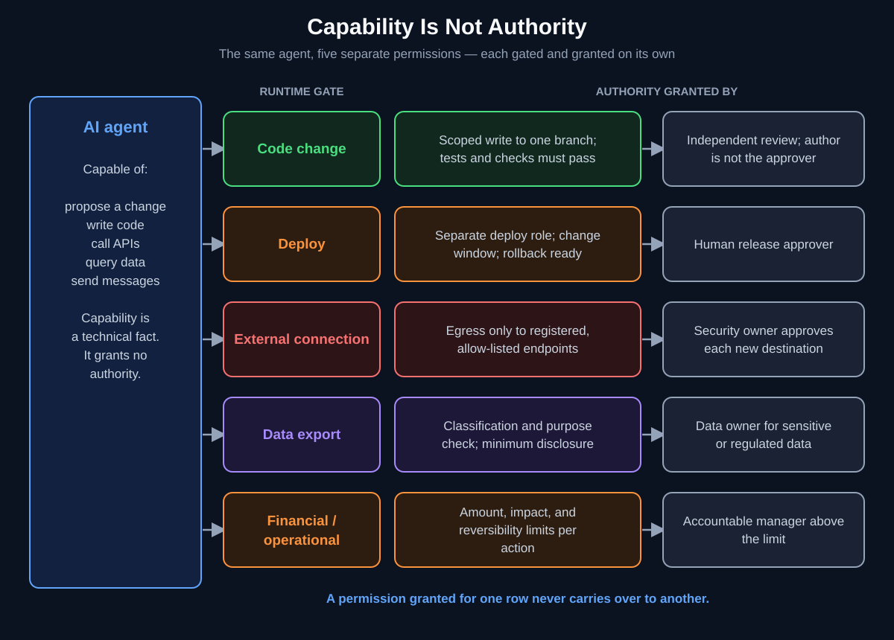
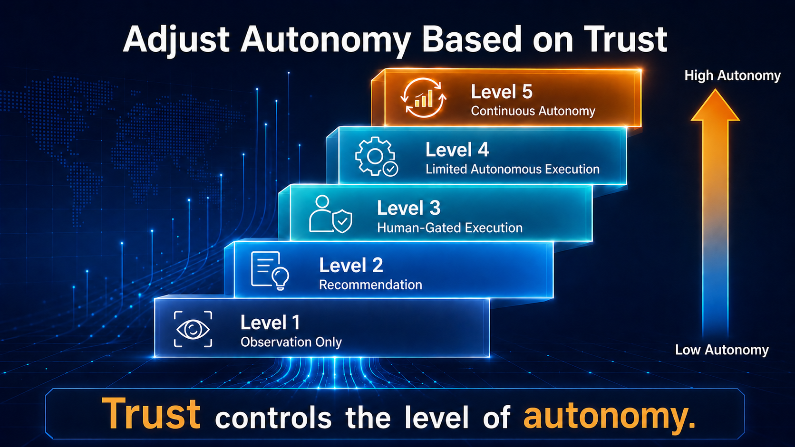
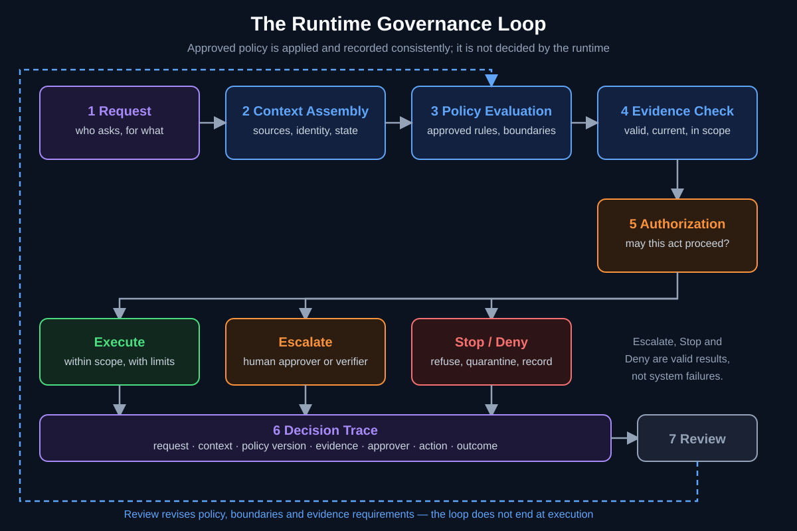
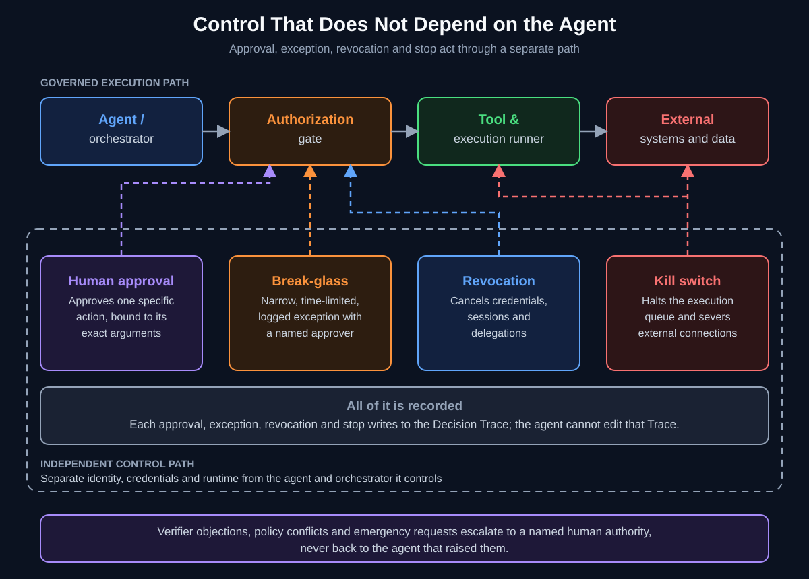
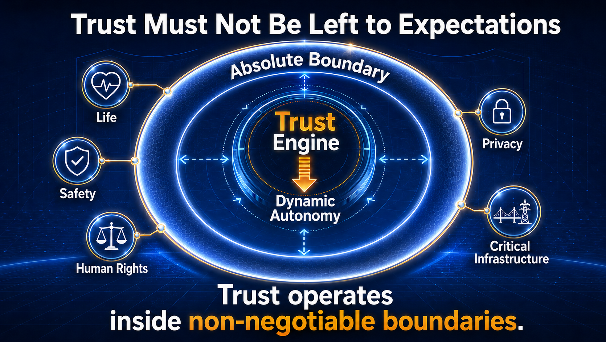
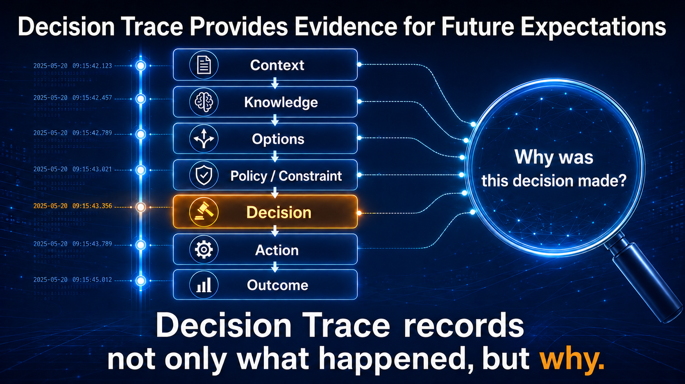
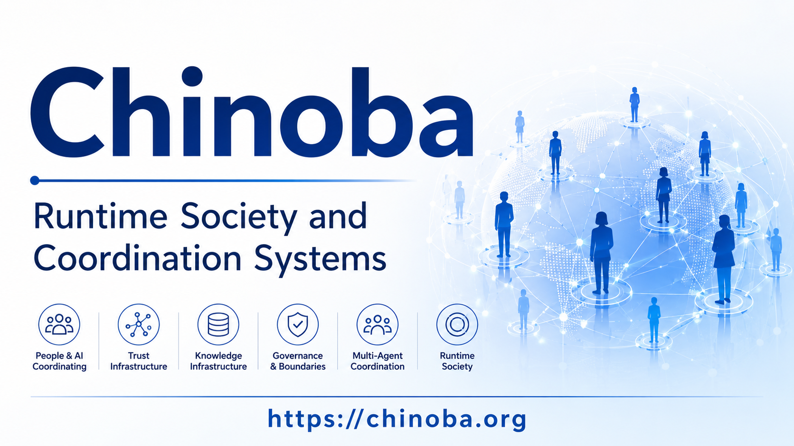

A governance boundary is not a wall around an AI. It is the structure that makes valuable action possible: clear about what is permitted, firm about what is not, and able to route the uncertain and the consequential to a person who can answer for it.
Rules, checklists, and after-the-fact audits are necessary, and they are not enough once an AI retrieves knowledge, calls tools, delegates to other agents, and reaches outside the organization. What matters is whether the boundaries that were written down are the ones that actually apply at the moment of action: what the AI may know, recommend, decide, execute, and escalate, and what evidence remains.
AI governance becomes operational when boundaries are not merely documented, but continuously evaluated at runtime—determining what an AI may know, recommend, decide, execute, and escalate under accountable human authority.
The practical guide behind this page's architecture. It works through how Knowledge Flow, a multi-dimensional Trust Engine, Boundary, Human Gate, Autonomy Control, and Decision Trace combine into a single runtime loop — one that governs not only which model is approved for use, but what it is allowed to know, decide, and do at the moment it acts.
View on Amazon → ASIN B0HFFBL7TV · Kindle · Masao WatanabeThe practical guide above leads this line of inquiry. Below it are the neighboring Chinoba books, videos, and the essay that build the Runtime AI Governance argument used throughout this page.
Neighboring practical guides on the knowledge, trust, and autonomy layers this page draws together.
Visual introductions to runtime governance, knowledge flow, and autonomy control.
The long-form essay behind this page's argument, on governance boundary systems as runtime infrastructure.
Most AI governance still assumes a system that answers a question and stops. Current systems keep going. They pull documents into a context, choose a tool, pass a task to another agent, call an external service, and act on the result. Every one of those steps is a place where a boundary is either enforced or only assumed.
A policy states intent. It cannot tell which version applies to this request, whether this requester is covered, or whether the knowledge behind an answer has expired. Someone, or something, has to apply it each time.
Guardrails shape what a model says. They do not decide which records it may read, which credentials its tools hold, or whether a drafted action may leave the building. A well-behaved model can still be handed excessive authority.
A log shows that something happened. It cannot undo a disclosure or a payment, and it rarely records why the action was permitted, under which rule, or on whose authority.
In a running system, the consequential moments are specific and few:
A boundary that is not enforced at one of these points is a statement of preference, not a control.
An AI model produces signals: predictions, rankings, drafts, recommendations. An organization turns a signal into a decision by adopting it and answering for it. Signal quality, review, and decision are different responsibilities, and each one needs its own boundary. Where those boundaries are only understood informally, people supply them from experience. An agent cannot, so the unwritten rule has to become an explicit one.
AI generates signals.
Organizations generate decisions.
A boundary is where
that handover is made visible.

“What should the model be forbidden to do?” is one question. A governed system has to answer seven. Each boundary has its own owner, its own enforcement point, and its own evidence, and a pass on one says nothing about the others.

| Boundary | Prevents | Permits | Evidence to keep |
|---|---|---|---|
| Data / Knowledge | Unauthorized, expired, out-of-scope, or conflicting knowledge shaping a decision. | Access to current, owned, permission-checked knowledge for a stated purpose. | Sources and versions used, as-of time, what was excluded and why, conflicts found. |
| Identity / Authority | Acting under borrowed, inherited, or ambiguous authority; delegation wider than the delegator holds. | Action under a named identity with scoped, expiring, delegated authority. | Acting identity, on whose behalf, delegation scope and expiry. |
| Decision | A recommendation treated as a decision, or a draft treated as a commitment. | Proposals broadly; decisions only inside defined classes and thresholds. | Options considered, decision class, stated uncertainty, who or what decided. |
| Tool / Execution | Unregistered tools, widened arguments, and execution that differs from what was approved. | Registered tools with bounded arguments, targets, and limits, run in isolation. | Tool and version, full arguments or their hashes, target, result, comparison to the approved operation. |
| External Connection | Data leaving through unapproved destinations, over-broad credentials, or paths that bypass the control point. | Calls to registered destinations with a classified payload under least-privilege credentials. | Destination, payload class, credential scope, allow or deny decision. |
| Time / Freshness | Acting on expired, superseded, or revoked knowledge; reusing an old approval. | Knowledge and approvals that are valid at the moment of decision and inside their lifetime. | Effective and expiry dates, revocation status at decision time, approval consumption. |
| Organizational / Responsibility | Diffuse accountability, where “the AI decided” leaves no owner. | Action with a named accountable owner, approver, and escalation path. | Owner, approver, actor, and decision-maker recorded separately; escalation route used. |
Time is a boundary in its own right. A record can be created on one date, take effect on another, and be revoked on a third; a system that cannot tell these apart cannot reconstruct what it was allowed to know when it acted.
Read this way, a boundary says who owns what at each handover: whoever maintains the quality of a signal, whoever reviews it, whoever commits the decision, whoever executes it, and whoever can interrupt. Responsibility moves along the path. A governed system makes each move explicit instead of leaving it to be inferred afterwards.
The same agent doing the same kind of task should not face the same boundary everywhere. How tight a boundary is set depends on what the action touches, and that is assessed per request, not fixed per system.
How many people, records, or systems the action affects. A single internal note and a message to every customer are different actions.
Whether the action can be undone, and at what cost. A draft can be discarded; a payment, a deletion, or a disclosure cannot be recalled.
Whether the effect leaves the organization. Crossing the perimeter turns a reviewable internal step into a commitment others rely on.
How confident the system is, and whether the situation resembles ones it has handled. A good system knows when it does not know, and says so by escalating.
Whether a law, a license, or a customer commitment attaches to the action. These raise the evidence required, whatever the model’s confidence.
A small set of limits does not move with context: life and safety, personal data, critical assets. No trust score, business case, or approval buys an exception.

That an agent can write the code, assemble the report, or formulate the payment tells you about the agent. Whether the organization has allowed it is a separate fact, recorded elsewhere, granted by someone else, and revisable without touching the model.

“This agent is trusted” hides more than it says. Within one task an agent may propose, decide, execute, send outside, and change something durable. Each carries different consequences and needs a different approver:
For that reason, autonomy is better expressed per action than per agent. A level number is a way to talk about autonomy, not a permission. What the runtime issues is a limited authorization for one purpose, target, and period.
When one agent asks another to act, it can pass on only authority it holds and that policy allows to be passed on. A delegate does not inherit the delegator’s role. A useful delegation record carries its purpose, scope, expiry, and whether it may be delegated again, and it stays attached to the trace as the work moves between agents.
Delegation record
├── Purpose
├── Scope and target
├── Authority passed on
├── Expiry
├── Further delegation: yes / no
├── Accountable owner
└── Trace reference
It is tempting to treat authority as a reward: the more capable the agent, the more it is trusted with. Capability raises the value of what the agent can do and the cost of its mistakes at once. The better answer is to combine several controls, none of which relies on the agent being right.
Credentials and tools scoped to the task, the target, and the time window. Standing, all-purpose access is the exception.
The agent that proposes is not the one that approves, and the one that executes does not edit the policy or the trace.
A defined path upward when knowledge is missing, sources conflict, impact is high, or the situation is new.
A separate checker, with its own inputs, for high-impact proposals, so that the system is not asked to certify itself.
A named person decides, seeing the actual operation and its evidence, for actions that bind the organization.
Preference for actions that can be rolled back, staged, or simulated first; tighter control as an action becomes harder to undo.

Policy is written once and read rarely. A runtime turns it into something that happens on every request: a gate that is evaluated, a decision that is made, and a record that is kept. The path is short and the same each time — Request, Context Assembly, Policy Evaluation, Evidence Check, Authorization, Execution or Escalation, Trace, Review.

The runtime does not decide whether a policy is right. People with the authority to set policy do that, through their own review and change process. The runtime’s job is narrower and harder to get wrong: apply the approved, versioned policy the same way every time, and record exactly what it did.
When it cannot evaluate something — an identity service is down, a knowledge source is unreachable, two rules conflict — it does not guess. Low-impact reads may continue for a short, stated grace period. Anything that moves money, sends data out, or touches the physical world fails closed and goes to a person.
Policy is authored by people.
The runtime applies it,
consistently, and keeps the receipt.
Each evaluation ends in one of three results, with its conditions attached:
Ask and Stop are not failures. They are the boundary doing what it was built to do, and a trace that shows a risky case handed to a human is evidence of a system working, not of an AI that “did nothing.” Inputs are weighed so that they cannot cancel each other: strong trust or a good business case does not buy back a violated boundary, and an approval does not excuse a missing piece of evidence.
| Stage | Controls in place | Evidence produced |
|---|---|---|
| Before execution | Identity and authority check; context and knowledge validated for freshness, scope, and permission; policy evaluated; authorization issued for one specific operation; approval where required. | The request, the evidence set, the policy version and its decision, the approval record. |
| During execution | Short-lived, scoped credentials; isolated runner; amount, rate, and destination limits; monitoring for deviation; the ability to pause, revoke, or stop mid-run. | Execution events, limit hits, anomalies, interventions. |
| After execution | Outcome checked against the approved operation; independent sampling or challenge; review of exceptions and near-misses; findings returned to policy, knowledge, and thresholds. | Outcome, differences found, review findings, resulting policy or threshold changes. |
Auditing afterwards remains valuable. It is one layer among three, and the only one that cannot prevent anything.
A button that records “approved” is not yet a control. A person approves what they were shown; the system executes what it holds. If the two can differ, because arguments were completed after approval or a pending item was edited, the approval has been reused for something else.
The remedy is mechanical. Store the complete normalized operation that was approved, generate the approval screen from that same object, rebuild the operation immediately before execution, compare, and on any material difference reject it or ask again.
An agent should be free to revise its plan. What reaches an external system should be a finalized package: the tool and its version, the inputs, the authority it runs under, its constraints, its expiry, and the evidence it rests on — evaluated against policy, then fixed. After that point the agent cannot quietly swap the recipient, the parameters, or the tool.
This does not restrain the agent’s thinking. It separates what an AI suggests from what the organization has committed to.
A conceptual arrangement, not a product design. The important property is separation: the component that reasons is not the component that authorizes, the one that executes cannot rewrite the evidence, and the path that can stop everything does not run through the thing being stopped.
Take C1 to C6 as the path of a request. C7 to C10 act on the whole path rather than on one step: they challenge it, approve into it, record it, and can cut it. No single component appears in both the “proposes” and the “authorizes” column, and none can edit its own audit trail.
A signed record of what a control point decided shows that it applied the rules in force. It does not show that the rules were right, nor that traffic could not route around it. Those need policy change control, default-deny egress, and an inventory of registered tools and connections.
A person who clicks Yes at the end of a workflow they did not shape holds the formal responsibility without the actual control. Human involvement works in three registers: approving specific consequential actions, supervising routine ones, and above both, writing the structure — the boundaries, thresholds, stop conditions, and escalation paths — that the system operates inside.
The third is where most of the leverage sits. People who wrote the criteria can explain them, accept disagreement, and take responsibility for stopping the system.
A boundary that cannot bend will be bypassed, and a boundary that cannot be withdrawn is a liability. Mature governance plans for both: a controlled way to make an exception, and a reliable way to take authority back.

An emergency override that is narrow in scope, limited in time, tied to a named approver and a stated reason, and recorded in full. It expires on its own, and it is reviewed afterwards. It does not unlock the fixed limits.
Withdrawing authority already granted: cancelling credentials, expiring sessions, ending delegations, and withdrawing approvals not yet used. Revoking knowledge or an exception is different from letting it expire, and records who did it, why, and what it affects.
The ability to halt the execution queue, cut external connections, and quarantine pending actions. Its path has its own identity, credentials, and runtime, so that it still works when the agent or orchestrator it stops is compromised, looping, or unresponsive.
When a verifier objects, two policies conflict, or a request claims urgency, the matter goes to a named human authority with the evidence and a deadline. The agent that raised it cannot resolve it, and an unresolved conflict is never settled by ranking.
Stopping a system is a governance capability, not only an engineering one. It has to be a practiced procedure with a known owner, a tested trigger, and a defined way back to normal operation. Autonomy that was widened can be narrowed just as fast, and restored in steps as evidence returns.
A control that depends on
the thing it controls
is not a control.
Break-glass exists for situations the normal rules did not foresee. It should not be a route to what must never happen. Harm to life and safety, violations of human rights, unauthorized use of personal data, damage to critical assets and to social infrastructure sit outside what any exception can grant, and outside what any trust score can offset.

A boundary is only as good as what it can show afterwards. For an important action, a reviewer should be able to reconstruct six things from the system’s own records, without relying on anyone’s memory or on the agent’s account of itself.
| The question | What the record must show | Where the proof lives |
|---|---|---|
| What was requested? | The requester, the stated purpose, the exact operation asked for, and the time. | Request record, Decision Trace |
| Which data, authority, and tools were used? | Sources and versions with their as-of time; the acting identity and delegation chain; the tools, arguments, and destinations involved. | Evidence set, identity and delegation records, execution record |
| Under which policy was it allowed, denied, or escalated? | The policy version evaluated, the result, the reason, and any boundary that applied. | Policy decision log, Decision Trace |
| Who approved it or granted the exception? | A named person or role, the authority they acted under, what exactly they approved, and its validity window. Actor, decision-maker, and accountable owner recorded separately. | Approval and exception records |
| What was executed, and what resulted? | The operation as run, shown to match the approved one or the differences found; the outcome, side effects, and any intervention. | Execution record, comparison result, outcome record |
| Can it be revoked or stopped at any time? | Who holds the stop and revocation rights, that the path is independent of the agent, and the date it was last exercised in a drill. | Revocation and kill-switch records, exercise log |
A system that cannot show one of these rows is not necessarily wrong. It cannot demonstrate that it was right, and the decisions that depend on that row deserve extra review.
A trace sitting in the system’s own store has been recorded. It becomes provable when someone outside that system can verify it has not been altered. Hash-chaining protects consistency within the ledger; periodically committing a digest to an independent reference protects against a compromised ledger being quietly rewritten. Between the two there is a window, and the right cadence is a decision about how long that window may be for the actions concerned.
A good outcome does not prove a good decision, and a bad one does not prove a bad decision. Without the trace, luck, stale knowledge, missing policy, and sound judgment that happened to fail all look the same. Stops, rejections, and exceptions teach as much as successes do, which is why they are recorded as carefully.

The same boundaries take different shapes in different work. These six patterns show what an AI can do, what it may do without asking, what stays with a person, and what must be on record.
| Pattern | AI can | May run automatically | A person approves | Evidence needed |
|---|---|---|---|---|
| Internal knowledge inquiry | Retrieve from permitted sources, summarize, and answer with citations. | Answers built from current, in-scope sources the requester may see. | Answers that rest on conflicting or expired sources; requests beyond the requester’s access, which go to the knowledge owner. | Sources and versions, as-of time, what was excluded for permission or validity. |
| Contract and policy review | Extract clauses, compare them with standard terms, flag deviations, draft alternatives. | Extraction, comparison, and internal summaries. | Any approval, exception, or counterparty-facing change, by legal or the accountable owner. | Clause-to-standard mapping, policy version, exception reasoning, approver. |
| Code change | Propose a patch, run tests in a sandbox, open a pull request. | Changes on a scoped branch that pass checks, in pre-approved low-risk categories. | Merge to a protected branch; anything touching authentication, payments, or permissions; review by someone other than the author. | Diff, test results, reviewer identity, policy checks passed. |
| Deployment | Prepare a release plan, run pre-checks, propose a rollout. | Non-production deployments in approved environments with automatic rollback. | Production release, schema or configuration changes, anything outside the change window. | Build provenance, approver, window, rollback test result. |
| Customer response | Draft a reply, check product terms, propose a remedy. | Standard answers from current approved terms. Drafting and sending are separate steps. | Refunds, commitments, exceptions, and sensitive or legally significant cases. | Customer context used, policy version, difference between draft and sent message, approver. |
| External API integration | Select an approved connector and prepare the call. | Read-only calls to registered endpoints with a minimal payload. | A new destination; any write or transfer; sensitive data in the payload. | Destination, payload class or hash, credential scope, policy decision, response. |
These are generalized patterns for discussion, not descriptions of any particular organization, customer, or deployment, and they carry no claims about results. What may run automatically in a given setting depends on its risks, regulations, and the evidence gathered there.
No one needs to build the whole architecture before starting. The sequence below begins with the actions that matter most and widens only as the evidence for each step accumulates.
Useful measures at each step are escalation accuracy, the share of consequential actions with complete evidence, time to revoke, and how often a decision can be reproduced from the trace.

Mature AI governance is not making AI “safe” in the abstract. It is being able to say, in operation, who permitted what, under which conditions, and how far. It means that answer can be explained afterwards, enforced at the moment of action, withdrawn when circumstances change, and improved from what the system learns. The boundary is where that responsibility begins.